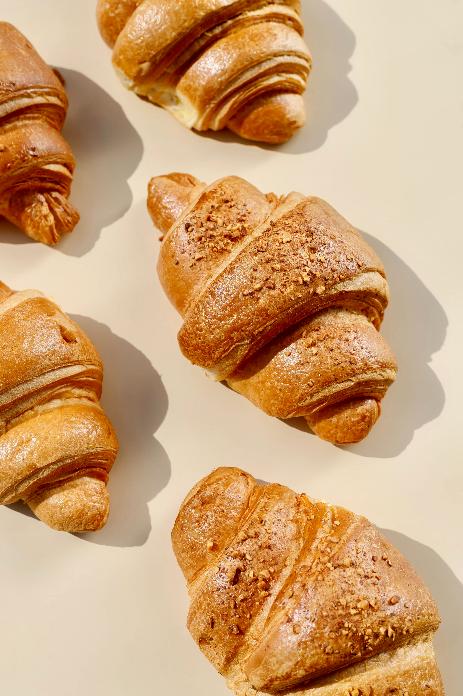
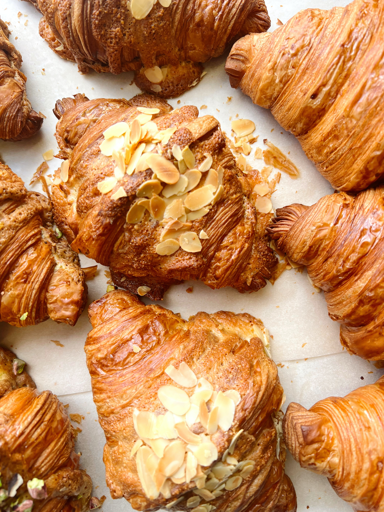

ü•ê Croissant
Viennoiseries
üá´üá∑ Place of origin, France
OFFICE HOURS: MONDAY - FRIDAY 9:30 - 4:30PM

Amount Per 1 croissant, medium (57 g)
Calories 231
Learn More
Croissant: Crescent-shaped breads
Percent Daily Values are based on a 2,000 calorie diet. Your daily values may be higher or lower depending on your calorie needs.
A croissant is a buttery, flaky, French viennoiserie pastry inspired by the shape of the Austrian kipferl but using the French yeast-leavened laminated dough.




Yeasted Laminated Dough
Croissants are made of yeasted laminated dough, yet many other baked goods rely upon the lamination technique for flaky layers (think Kouign-Amann, biscuits, and anything made with puff pastry, like palmier cookies).
Learn More
FAQ
I am a first time croissant baker. What is your best advice?
Can I turn your croissant recipe into a sourdough version?
My butter breaks into pieces. What should I do?
Can I turn your croissant recipe into a sourdough version?
My butter breaks into pieces. What should I do?